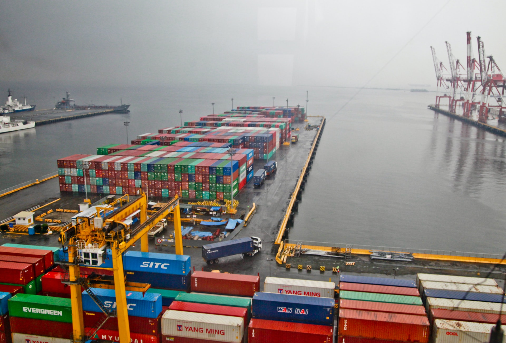

America’s trucking industry is the bloodline of the U.S. economy. Nearly 71% of all freight tonnage in America moves on the back of trucks. Moving 11 billion tons of freight annually requires more than 3.6 million heavy-duty Class 8 trucks and over 3.5 million professional truck drivers. Without our industry, the American economy would come to a halt. By contrast, rail transportation accounts for about 13 percent of the nation’s freight tonnage.
There are many types of truck freight, each with a unique yet important role for moving different truck freight across the nation and load boards make it easy to find truck freight. Companies ship a variety of truck freight ranging in size, value, and contents. It’s all thanks to truck freight and the specific trailers and equipment necessary for the dedicated men and women of the trucking industry to haul the freight.